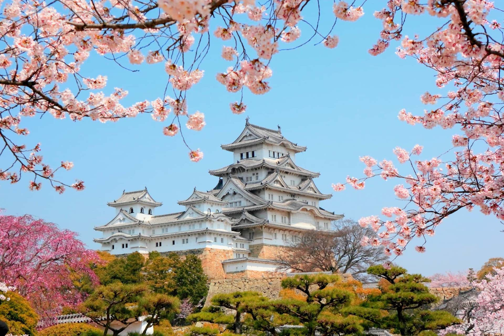

I want to go to Japan because I’m fascinated by its unique blend of tradition and modernity. The rich culture, from ancient temples and tea ceremonies to cutting-edge technology and vibrant city life, makes Japan a place like no other. I'm especially drawn to the beauty of the country — from cherry blossoms in the spring to peaceful shrines and scenic mountains. I also want to experience the incredible food, such as authentic sushi, ramen, and traditional sweets. Japan’s clean, safe, and efficient environment makes it an ideal place to explore and learn. Whether it's through experiencing the culture, trying new things, or simply walking the streets of Tokyo or Kyoto, visiting Japan feels like a dream that would help me grow personally and connect with a culture Ive long admired.
There are many amazing places I want to see in Japan. Tokyo is at the top of my list because of its exciting mix of modern technology, shopping districts like Shibuya and Shinjuku, and its unique pop culture. I also want to visit Kyoto to experience the peaceful atmosphere of ancient temples, traditional wooden houses, and beautiful gardens. Seeing Mount Fuji, Japan’s most famous mountain, is another dream — especially during sunrise or from nearby Lake Kawaguchi. I’d love to explore Nara, known for its friendly deer and historic sites, as well as Osaka for its street food and lively vibe. Visiting Hiroshima to learn more about its history and peaceful message is also important to me. From big cities to quiet nature spots, I want to experience the full beauty and variety of Japan.
yaha aa jaa